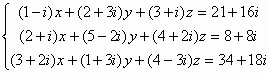
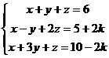
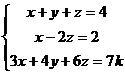

聯立三元一次方程(複數係數II及高考版)
更新日期: 2012年4月1日
這個版本比第(I)加入了計算通解(無限多個解)及判斷是否無解的情況。另外這個程式亦可以計算實數係數時，常數項包含一個一次未知代數項，只要輸入一次程式即可求出答案，詳情請參看例題5及6。
另外若果不需要記存答案，程式中綠色部份可以不輸入。
程式 (186 bytes 或 182 bytes)
程式需要在 CMPLX 模式下執行，因此在選擇新程式位置後，按 2 選用CMPLX模式。
?→A: ?→B: B┘A→C: ?→Y: Y┘A→D: ?→X: X┘A→M:
?→A: ?→B: 1┘(B - CA→B: ?→Y: B(DA - Y→Y: - D - CY→D:
?→X: B(X - MA→X: CXM-: M→A: X→B: ?→A: ?→B: ?→C: A: ?→A:
If C + BY = - AnsD: Then A - BX - AnsM→C: ?→C: M◢ D◢ X◢ Y: Else
(A - BX - AnsM)┘(C + BY + AnsD→C: M + DC→A◢ X + YC→B◢ C
例題1: 解聯立方程 :
按 Prog 1 再按 1 EXE 1 EXE 1 EXE 6 EXE 1 EXE -1 EXE 2 EXE 5 EXE
1 EXE 3 EXE 1 EXE 10 EXE (顯示x=1) EXE (顯示y=2) EXE (顯示z=3)
例題2: 解以下聯立二元一次方程

按 Prog 1 再按
1 EXE 1 EXE EXE (不輸入 z的係數) 7 EXE
1 EXE -1 EXE EXE (不輸入 z的係數)1 EXE (顯示4) EXE (顯示3)
因此解答為 x = 4 及 y = 3.
程式執行完成後，請按AC中止程式
例題3: 解聯立方程 :

按 Prog 1 再按 1 - i EXE 2 + 3i EXE 3 + i EXE 21 + 16i EXE
2 + i EXE 5 - 2i EXE 4 + 2i EXE 8 + 8i EXE
3 + 2i EXE 1 + 3i EXE 4 - 3i EXE 34 + 18i EXE
( 此時計算機右上角出現R<=>I，表示為複數解)
(顯示x實數部為 1) Shift Re<=>Im (顯示x虛數部為 2i)
EXE (顯示y實數部為 2) Shift Re<=>Im (顯示y虛數部為 - 3i)
EXE (顯示z實數部為 3) Shift Re<=>Im (顯示z虛數部為 4i)
即 x=1+2i, y=2-3i, z=3+4i
例題4: 解聯立方程 :

按 Prog 1 再按 1 EXE 1 EXE 1 EXE 6 EXE 1 EXE -1 EXE 2 EXE 5 EXE 3 EXE
1 EXE 4 EXE 17 EXE (顯示行列式為0) EXE
(注意此時沒有Disp，並且有?C號，表示 可能是無解(判斷值≠0)或無限解(判斷值=0)，而這時的判斷值為0，表示方程組是有無限個解的情況)
EXE (顯示x的解，常數項為11/2) EXE (顯示x的解，t的係數為 -3/2，即是 x = 11/2 - 3t/2)
EXE (顯示y的解，常數項為1/2) EXE (顯示y的解，t的係數為 1/2，即是 x = 1/2 + t/2)
因此通解為:
x = 11/2 - 3t/2
y = 1/2 + t/2
z = t
例題5: 解聯立方程 :

按 Prog 1 再按 1 EXE 1 EXE 1 EXE 6 EXE
1 EXE -1 EXE 2 EXE 5 + 2i EXE (以i代表未知代數常數(只限常數項及未知代數為一次))
1 EXE 3 EXE 1 EXE 10 - 2i EXE (此時計算機右上角出現R<=>I，表示為複數解，顯示1)
Shift Re<=>Im (顯示1 i，即 x = 1 + k)
EXE (顯示2) Shift Re<=>Im(顯示-1 i，即 y = 2 - k)
EXE (顯示3) Shift Re<=>Im(顯示0 i，即 z = 3)
例題6: 當下列聯立方程是一致的(consistent)及有無限多個解時，求 k值。

按 Prog 1 再按 1 EXE 1 EXE 1 EXE 4 EXE
1 EXE 0 EXE 2 EXE 2 EXE 3 EXE 4 EXE 6 EXE 7i EXE
(注意此時沒有Disp，並且有?C號，表示 可能是無解(判斷值≠0)或無限解(判斷值=0)，顯示 - 14)
Shift Re<=>Im(顯示7 i，即判斷式 = - 14 + 7k)
所以無限個解(consistent)的條件為 - 14 + 7k = 0，即答案為 k = 2
程式執行完成後，請按AC中止程式
註1: 若程式有綠色程式碼，執行完成後及方程組有唯一的解時，x、y、z的值分別儲存在記憶A、B、C中。
註2: 若方程組為 a1x + b1y + c1z = d1 , a2x + b2y + c2z = d2 , a3x + b3y + c3z = d3
解聯立三元一次方程的限制條件為: a1b2≠b1a2及a1≠0，若果出現Math error，代表違反限制條件 ，可以嘗試改變方程的輸入次序。
返回 CASIO fx-50FH、fx-3650P II、fx-50FH II及fx-50F PLUS 程式集